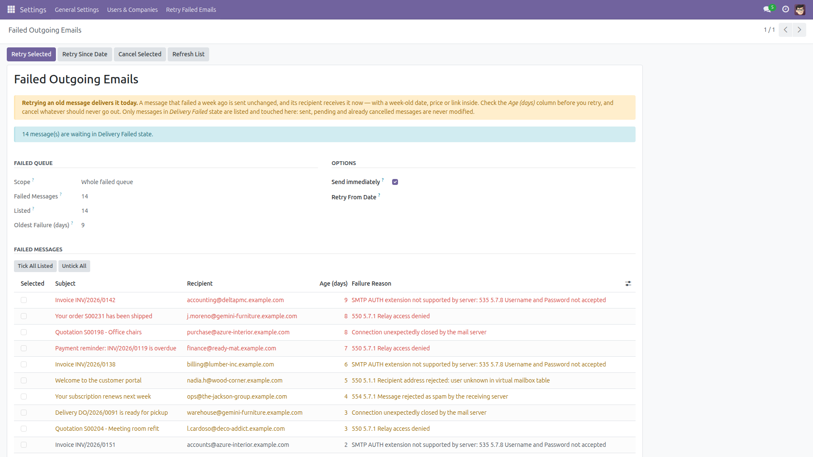
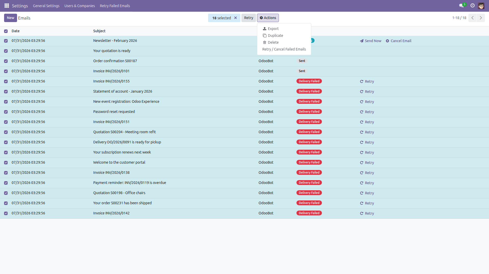
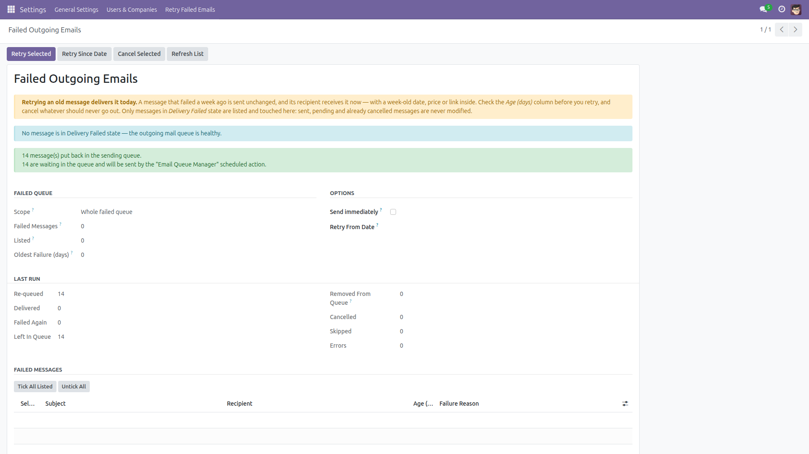

Retry Failed Emails in Bulk
One screen for everything the mail server refused.
After an SMTP outage, hundreds of messages sit in the Odoo mail queue in
Delivery Failed state. Standard Odoo can only cure them one at a time: open the
message, click Retry, go back, open the next one. This module adds an administrator screen
that lists the failed messages with their subject, recipient, age and the exact
error the mail server returned, and acts on them in bulk.
Free and open source (LGPL-3), Odoo 14.0 through 19.0.
- See what failed and why — subject, recipient, age in days and the first line of the SMTP error, oldest first.
- Retry what you tick — nothing is pre-selected when you open the whole queue, so nothing goes out by accident.
- Retry everything since a date — one click for "everything that failed during last night's outage", including messages not on screen.
- Cancel for good — mark the messages that must never be sent; they are left in Cancelled state, never deleted.
- An honest report — how many were re-queued, delivered, failed again immediately, left in the queue, removed by Odoo, cancelled, skipped and errored. A message Odoo deleted while processing it is never counted as delivered.
- One bad address cannot abort the batch — every message is processed in its own database savepoint.
- Odoo's own send path — the standard Retry and Send code, no hand-rolled SMTP, so nothing behaves differently from the buttons you already know.
- Also from the Emails list — select messages in Settings → Technical → Email → Emails and use the Action menu.
The warning this module puts on its own screen: retrying an old message
delivers it today. A message that failed a week ago is sent unchanged, and its recipient
receives it now — with a week-old date, price or link inside. Check the age column before
you retry, and cancel whatever should never go out.
What is never touched
- Sent messages — re-sending would deliver a duplicate to your customer.
- Outgoing (pending) messages — the standard mail queue cron is already going to send them.
- Cancelled messages — somebody decided they must never leave; this screen never resurrects them. Use the standard Retry button on the message itself if you change your mind.
Only messages in Delivery Failed state are listed and modified. Nothing is ever deleted.
Screenshots

The screen: the warning about old messages, how many are waiting, and every failed message with its recipient, age and error.

The same tool from the standard Emails list: select the messages, then Action → Retry / Cancel Failed Emails. The selection arrives pre-ticked.

After a run: re-queued, delivered, failed again, left in queue, removed by Odoo, cancelled, skipped and errors — counted, not estimated.
Installation
- Open Apps, remove the default "Apps" filter if needed, and search for Retry Failed Emails in Bulk.
- Click Install. Only the standard
mail module is required.
- No configuration is needed: the screen appears immediately under Settings.
Configuration
- There is nothing to configure. Access is restricted to users with Settings / Administration rights (
base.group_system), which is also who can read the mail queue in standard Odoo.
- Fix the cause first: Settings → General Settings → Discuss / Emails for the outgoing mail server. Retrying while the server is still down simply fails again — and the result panel tells you so.
- Optional: leave Send immediately unticked to only put messages back in the queue and let the standard "Email Queue Manager" scheduled action deliver them.
Usage
- Open Settings → Retry Failed Emails. The screen lists the failed messages, oldest first, with the total waiting.
- Tick the messages you want (or use Tick All Listed), then click Retry Selected and confirm.
- Alternatively fill Retry From Date and click Retry Since Date: every failed message queued on or after that date is retried, including messages not shown on screen. It works on the whole queue, so it is offered only when you opened the screen from the Settings menu — never when you arrived from a selection.
- Use Cancel Selected for messages that should never be sent — invoices for an outage that has been re-issued since, for example.
- Read the result panel: re-queued, delivered, failed again immediately, left in the queue, removed by Odoo, cancelled, skipped and errors. Refresh List reloads what is still failing — with a selection larger than one page, it loads the next messages of your selection.
- From Settings → Technical → Email → Emails you can also select messages and use Action → Retry / Cancel Failed Emails.
Limits, stated honestly
- The list shows the 300 oldest failed messages at a time, and says so on screen when there are more. Use Retry Since Date on the whole queue, or Refresh List to walk through a large selection page by page.
- One Retry Since Date run re-queues at most 1000 messages, and tells you when it stopped there so you can run it again. A selection larger than 1000 is cut to the first 1000, and the screen says how many were left out.
- Retry Since Date is offered only when the screen is opened from the Settings menu: it works on the whole queue, and must not send messages you did not select.
- Send immediately delivers at most 50 messages per run inside the request; the rest are re-queued for the standard mail cron. Messages are sent one at a time — one connection to your mail server each, but a message the server already accepted can never be rolled back and sent twice. For large batches, leave it unticked and let the mail cron deliver them in one connection.
- A message flagged "auto-delete" (most notification emails) is deleted by Odoo as soon as it has been processed, so this screen cannot report whether it was delivered. Those are counted separately as Removed From Queue; the outcome is on the document the message came from.
- Odoo does not store the moment a message failed, so the date filter and the age column use the date the message was queued — the closest reliable timestamp.
- Sending obeys your configured outgoing mail server. This module does not diagnose or repair SMTP settings; it only reports what the server answered.
Version notes
Identical behaviour on every supported series (14.0 – 19.0); only the view markup differs internally (attrs up to 16.0, list instead of tree on 18.0 and 19.0).
License: LGPL-3 · Source on GitHub · Issues and contributions welcome.